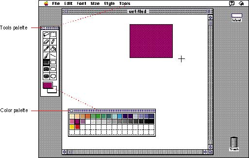

|
Tear-Off Menus and PalettesA tear-off menu is a menu that a user can detach from the menu bar by pressing the mouse button while the cursor is over the menu title and dragging beyond the menu's edge. These menus are usually called palettes. Palettes can also be part of a standard document window. Sometimes palettes pop up from an item in a tear-off menu. You can create tear-off menus and palettes to provide sets of colors, patterns, or tools to users. Use symbols such as icons, patterns, characters, or drawings to provide easy access to features of your application.Figure 4-53 shows a tear-off menu that becomes a palette and a palette that popped up from a torn-off menu. Figure 4-53 A tools palette and a color palette  Subtopics |